De 10 Beste Restaurants in Nijmegen Centrum
In Nijmegen, de oudste stad van Nederland, schuilt een gastronomische schat die even divers is als zijn rijke geschiedenis. Deze bruisende stad aan de…
De beste restaurants, cafés, lunchplekken en high tea-adressen in Nijmegen, van een snelle hap tot een avond culinair genieten.
In Nijmegen, de oudste stad van Nederland, schuilt een gastronomische schat die even divers is als zijn rijke geschiedenis. Deze bruisende stad aan de…

In Nijmegen zijn er een aantal opties te vinden wanneer je graag exclusief wilt dineren. Exclusief dineren houdt in dat je een gezellige avond uit…

Zoals de meeste van ons wel weten, heeft de Turkse keuken enorm veel te bieden. Een broodje köfte of een heerlijke baklava, veel Nederlanders zijn dol op…

De geschiedenis van de Nijmeegse cafés loopt ver terug in de tijd. Volgens gemeentearchief Nijmegen was er al sinds de viertiende eeuw spraken van één of…

Thais eten is door de jaren heen onder steeds meer mensen geliefd geworden. Populaire gerechten zoals Pad Thai en de verschillende romige curry’s, zijn…

Een knapperige bodem, heerlijk gesmolten kaas en jouw favoriete toppings; Jij bent zonder twijfel net zo een pizzaliefhebber als de meeste van ons. We…
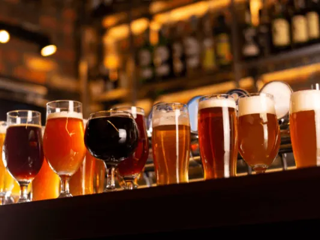
Het oudste en meer populaire Nijmeegse bier was het Molbier. Dat werd tot in Amsterdam en Antwerpen gedronken. In Nijmegen zitten nu negen brouwerijen, en…
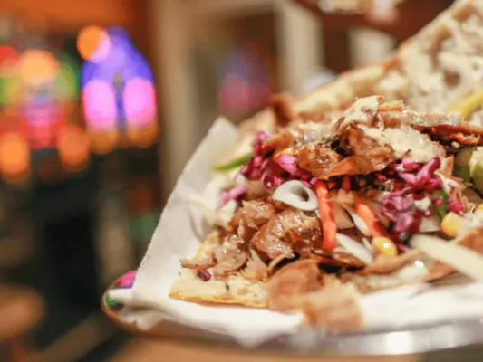
Kun jij een lekker broodje of een heerlijke shoarma schotel wel waarderen? Dan ben je zeker niet de enige. Shoarma is één van de meest populaire fastfood…
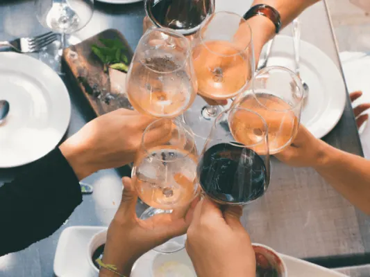
Tegenwoordig is een High Wine helemaal hip. De meeste mensen weten daarom ook direct waar we het over hebben als we de term ‘High Wine laten vallen. Voor…
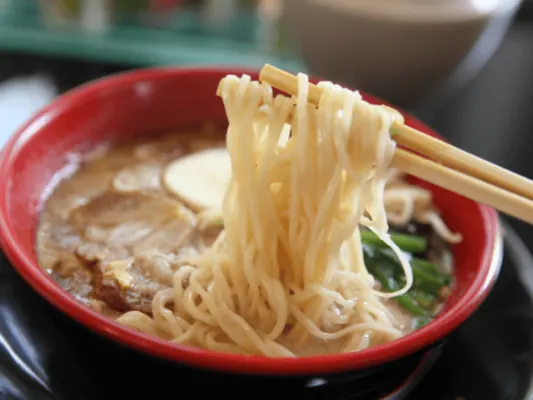
Sinds de populariteit van sushi ook voet aan Nederlandse bodem heeft gezet, is de Japanse keuken niet meer weg te denken uit ons kikkerlandje. Diverse…
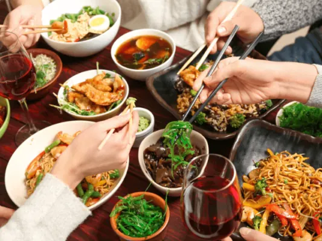
De Chinese keuken is zonder twijfel één van de meest populaire keukens onder de Nederlandse bevolking. Chinees eten is eigenlijk bij iedereen wel geliefd…
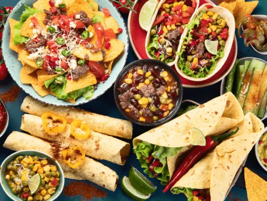
De meeste van ons zijn redelijk goed bekend met de Mexicaanse keuken. We zijn immers allemaal dol op die heerlijke taco’s en burrito’s, is het niet? De…
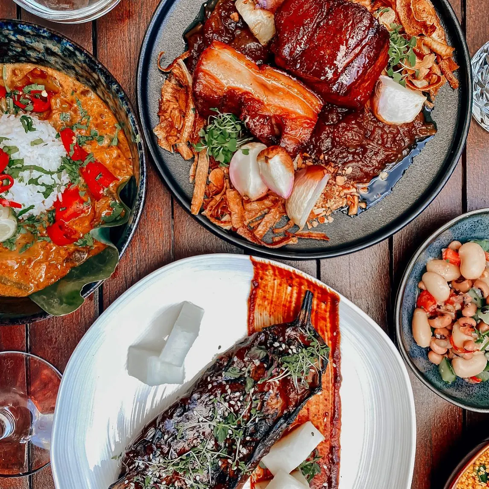
Een eetcafé is een café waar je tegelijkertijd geniet van lekkere maaltijden. Er staan dus niet alleen bitterballen en frikandelletjes op het menu…
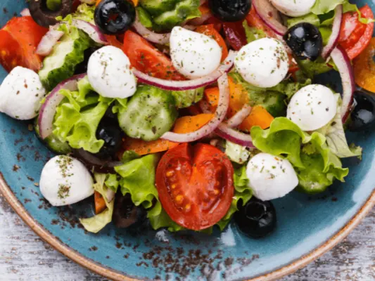
Van een overheerlijke tzatziki tot een verrassende moussaka, de Griekse keuken heeft ons enorm veel te bieden. Ben jij ook een levensgenieter die graag op…
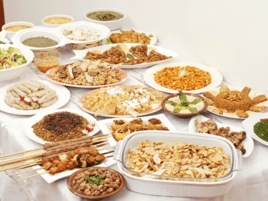
Eén van de meest verfijnde keukens ter wereld is de Libanese keuken. Deze kenmerkt zich met diverse invloeden uit de Mediterraanse en Midden-Oosterse…
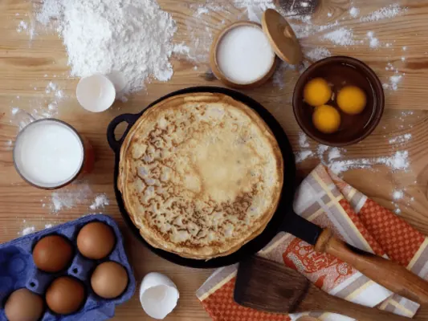
Ben jij ook zo gek op pannenkoeken? Dan ben je zeker niet de enige. Het is en blijft een populaire lekkernij in ons land. Er zijn in heel Nederland dan…
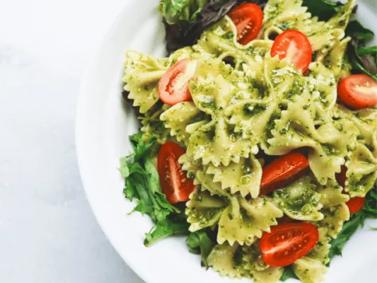
De Italiaanse keuken, de meeste van ons zijn er dol op. Pizza’s, pasta’s en nog veel meer, er is zo veel keuze. Wanneer je in een Italiaans restaurant…
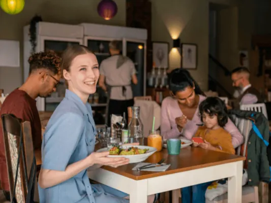
Heerlijk eten bij de allerbeste restaurants, en daarnaast lekker sportief bezig zijn? Dat is het unieke concept van happen & stappen. Zo kiezen veel…
Rondom Nijmegen kan je prachtige wandeling maken, door de veel nog oude wijken van de stad. Hoe lekker is het om tijdens je wandeling neer te strijken in…
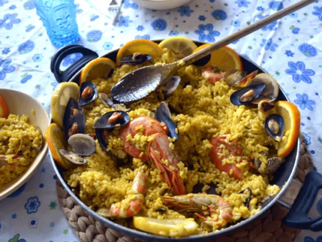
Heb jij de Nederlandse keuken inmiddels wel gezien, en ben je op zoek naar iets nieuws? Dan kunnen de culinaire hoogstandjes uit de Spaanse keuken jou…
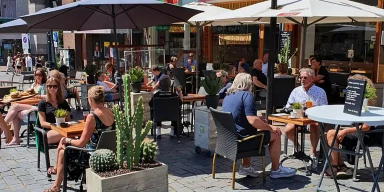
Plannen voor een dagje Nijmegen? Een lunch mag dan natuurlijk niet ontbreken! De keuze is bijna oneindig als je een leuke plek zoekt om te lunchen in…
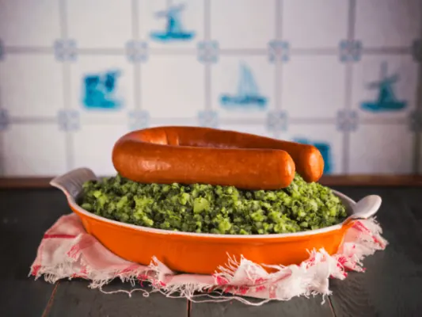
De meeste Nederlanders zijn geïnteresseerd in de culinaire hoogstandjes van diverse internationale keukens. Echter vergeten we vaak dat ook ons eigen…
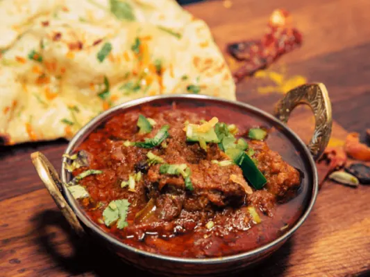
Veelzijdig, kleurrijk, pittig en gevarieerd, dat is hoe wij de Indiase keuken het liefst zouden omschrijven. Mocht je deze keuken nog niet geprobeerd…
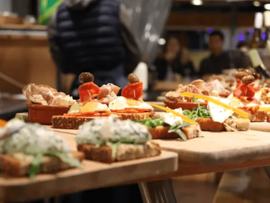
Wanneer je uit eten wilt gaan en iedereen blij wilt maken kom je al snel uit bij een ‘all you can eat’ restaurant of een tapas restaurant. Hier is…
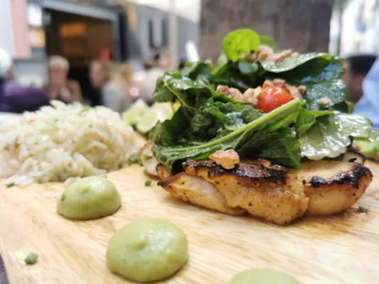
Wanneer je in de buurt van Nijmegen lekker uit eten wil gaan, dan is het natuurlijk van belang dat je daar geld voor hebt. Het kan namelijk zijn dat je…
Aziatisch eten is onder veel Nederlanders geliefd. Van curry’s tot noodles, voor zowel vegetariërs als vleeseters, de Aziatische keuken is enorm…
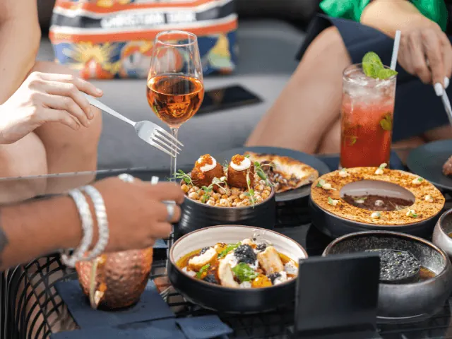
Bij de Franse keuken denken we vaak al gauw aan stokboord en croissants, en alhoewel deze lekkernijen absoluut een uniek onderdeel uitmaken van de Franse…
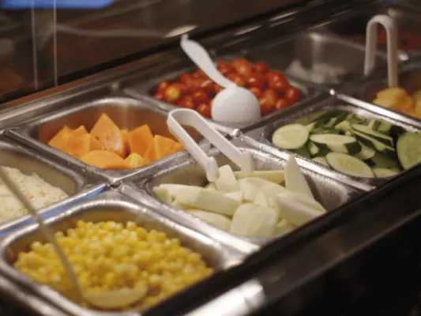
De populariteit van het ‘all you can eat’ concept uit de horeca neemt elk jaar verder toe. Het klinkt natuurlijk ook wel heel erg aantrekkelijk. Je weet…
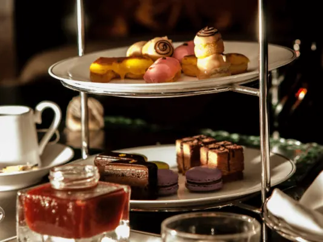
Sinds enige tijd is een High Tea in Nederland enorm populair. Het betekent dat je samen met familie, collega’s of vrienden van een aantal uurtjes van de…
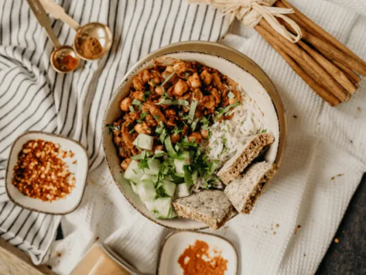
Wanneer je veganistisch door het leven gaat, dan kan het soms erg lastig zijn om een restaurant te vinden. Niet elk restaurant past zich namelijk aan, aan…

Wil je binnenkort heerlijk gaan eten met kleine kinderen in Nijmegen? Dan ervaar je misschien wel keuzestress. Kleine kinderen kunnen namelijk niet erg…
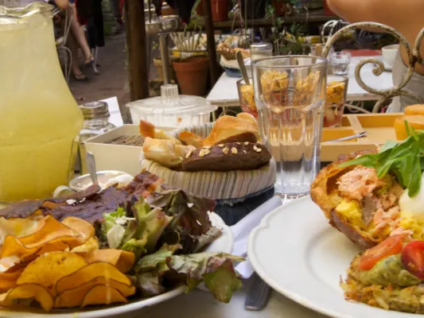
Nijmegen is een erg grote stad, daarom gaan veel mensen een dagje naar Nijmegen toe. Op zo’n gezellig dagje doet men van alles. Shoppen, wandelen…